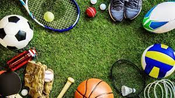
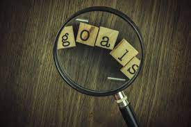

"I think this is the part where i have to describe myself. I am not sure but here goes nothing. Make sure you hover on the images"
- Karthik Sunder Raj

So, this page is devoted to everything about me. On the left portion of the website I have various images that when hovered explain them. I've also embedded one of my replt projects at the bottom of the page.
School Life
So, I'm a student who currently studies at HAHS. I do the mandatory subjects such as Science and maths and my major elective of IST and minor of Commerce. Overall, my two favourite subjects at school are probably science and IST as they allign with my interests and style of thinking.

Coding
Coding is one of my favourite hobbies. I've got experience in c# and Javascript and through the IST course, I've learned HTML and CSS. I'm currently working in python and trying to build some cool looking projects! I'm also on a cybersecurity team for the RAAF, working with Linux!

Sports
I love sports and play it on a daily basis. I've played many in my time such as AFL, NRL, basketball, soccer, golf, cricket, table tennis and loads of others. My favourite is probably cricket and i play it at a representative level.

Goals
Currently, I have several goals I am working towards. Firstly, I want to land a stable and well-paying job that is preferably in the software developement industry. Secondly, I would like to pass the HSC with a high band mark. Lastly, I would like to train enough so that I have a very low body fat percentage and am playing at a high level of cricket.